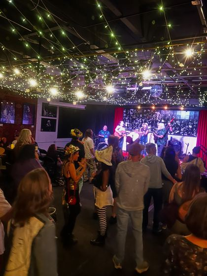
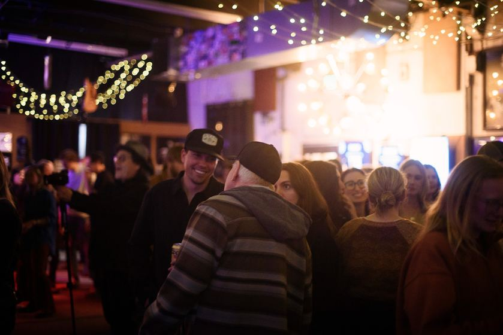

Funk'd Up Tuesdays Open Funk Jam
Monolith BrewingDenver
Tuesdays, weekly
6:30 PM to 10:00 PM
- Signup 7:00 PM
- Host
- Yannek Smith
1290 S Broadway, Denver, CO 80210
Funk and soul jams run on a groove more than on chord changes. Most tunes sit on one or two chords, and the rhythm section locks together underneath them.
Schedules change. Confirm with the venue or host before you go.
Expect vamps on one or two chords, James Brown and Meters tunes, Stevie Wonder and Aretha Franklin songs, and neo-soul grooves. On the nights that lean hip-hop, rappers freestyle over a groove the band keeps going.
Signup is often looser than at a blues night. Some nights keep a list, and on others the host waves players up, often calling singers and horn players in batches. Check the card for that night's signup.
The leader sets a groove and the band locks into it. Tunes run long, players solo over the vamp, and the leader cues breakdowns, hits and the ending with hand signals or a shout.
11 nights
3 nights
Monolith BrewingDenver
Tuesdays, weekly
6:30 PM to 10:00 PM
1290 S Broadway, Denver, CO 80210
RiverDenver
Tuesdays, weekly
from 9:00 PM
3500 Delgany St


Western Sky Bar & TaproomEnglewood
Monthly (last Tuesday)
4361 S Broadway, Englewood, CO 80113
3 nights
Musical Life DenverEnglewood
Wednesdays, weekly
8:00 PM to 9:00 PM
2842 S Broadway, Englewood, CO 80113


The MeadowlarkDenver
Wednesdays, weekly
from 9:00 PM
2701 Larimer St, Denver, CO 80205
Herb's BarDenver
Wednesdays, weekly
9:30 PM to 1:30 AM
2057 Larimer St, Denver, CO 80205
3 nights
Toosteppin Saloon (TooSteppin Brewing)Boulder
Thursdays, weekly
6:00 PM to 10:00 PM
4843 Pearl St, Suite A1, Boulder, CO



Roots Music ProjectBoulder
Thursdays, monthly
from 7:30 PM
4747 Pearl St, Suite V3A, Boulder, CO 80301


Cactus Jack's Saloon & GrillEvergreen
Thursdays, weekly
from 8:00 PM
4651 Hwy 73, Evergreen, CO 80439
1 night
Youth on RecordDenver
1st Friday of the month
5:00 PM to 8:00 PM
1301 W 10th Ave
1 night


Goosetown TavernDenver
Sundays, weekly
6:00 PM to 9:30 PM
3242 E Colfax Ave, Denver, CO 80206
Photos belong to the people credited on them. If one is yours and you want it down, tell me and it comes down.
The skill level on each card links here. Find your instrument, then the level that matches the night.
We build the right-hand feel and the two or three voicings that cover most of the songbook. Guitar lessons
We lock in sixteenth-note feel against real tracks and practice reading cues in the middle of a groove. Bass lessons
We drill the funk feels and a steady backbeat, then practice reading cues. Drum lessons
We get the voicings and the rhythm-hand feel down, and practice playing inside a band without covering it up. Piano lessons
Inquire about a good teacher for you, and I'll recommend someone if I know one.
Inquire about a good teacher for you, and I'll recommend someone if I know one.
Inquire about a good teacher for you, and I'll recommend someone if I know one.
In a lesson or two before your first night, we cover the grooves and tunes those nights run on, how the signup works, and how a set goes. Once you're my student, I'll help you pick the right night, and I'll be there.
Book a lesson How a first jam goes
$75 an hour, in your home or on Zoom. You pay after the lesson.